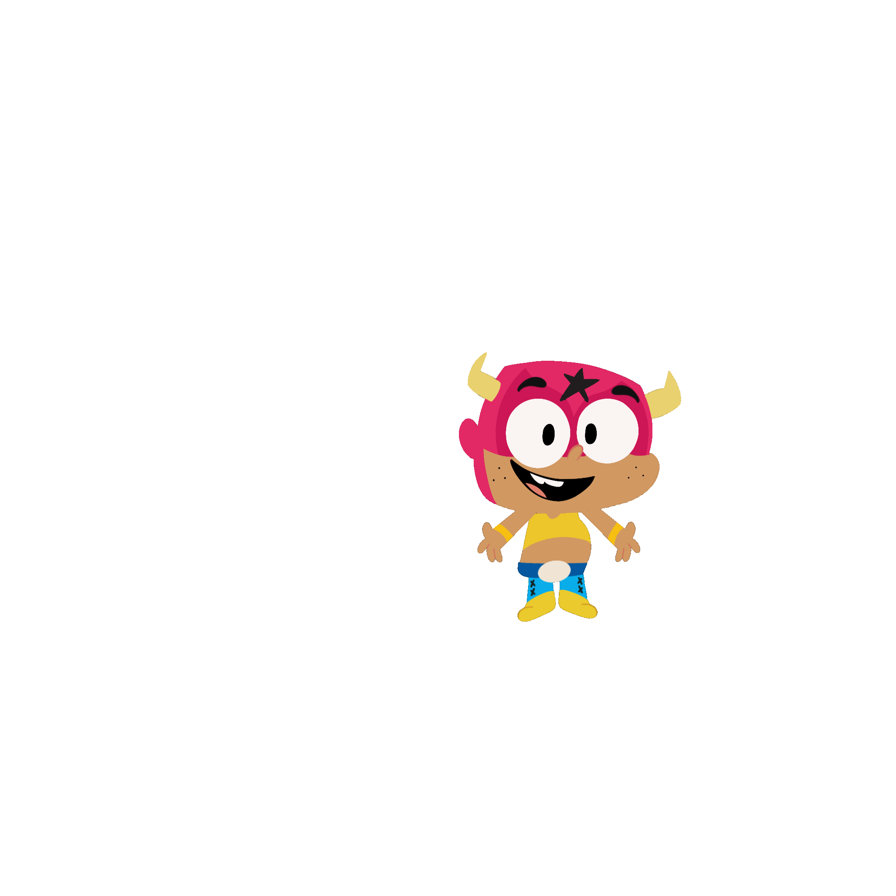
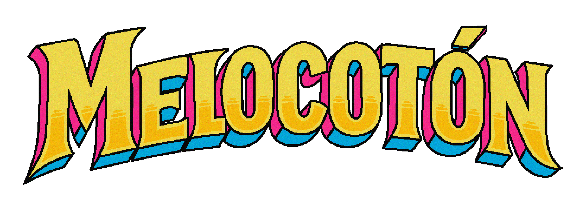
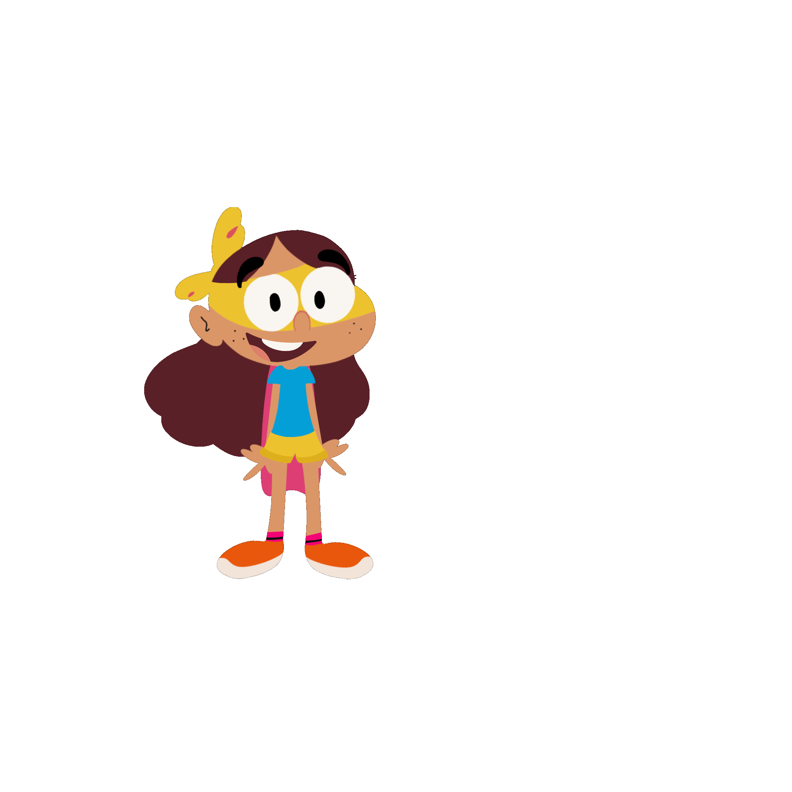
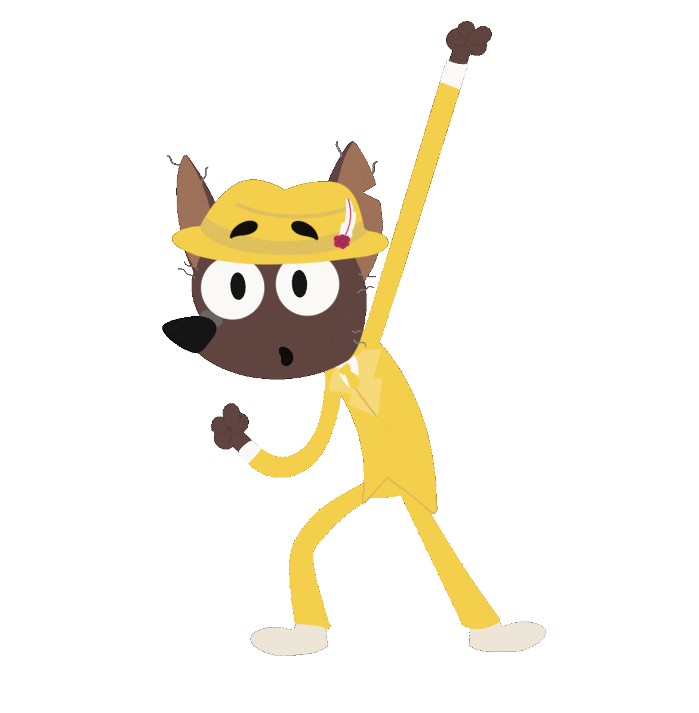
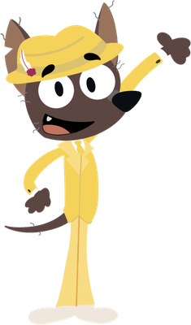

Memito el toro
Máscara rosa, capa y mucho valor. Enseña fuerza, juego y orgullo.

Textiles para jugar, tocar y aprender. Hechos para las infancias mexicanas.
Ver la colecciónUna frase de casa, dicha con cariño.
Muchas familias mexicanas, sobre todo las mamás, llaman así a sus hijos. Es ternura y cercanía de todos los días. Melocotón rescata esa calidez y la vuelve una colección que conecta a las infancias con su cultura.
Nacen de los rótulos, la lucha libre y la cultura popular mexicana. Cada uno tiene su títere y su libro.

Máscara rosa, capa y mucho valor. Enseña fuerza, juego y orgullo.

Lista para jugar y compartir historias. Cuenta las costumbres de la familia.

Compañero fiel de traje amarillo. Guía cada aventura.
Telas de colores para tocar, abrir y abrazar.

Uno por personaje, para inventar historias con las manos.
Didácticos y sensoriales. Cada personaje cuenta su propia historia.
Cada niño lo decora y lo hace suyo.
Bolsa naranja con cordón. Guarda los juguetes y también se usa para jugar.
Todo viene en el costalito, listo para regalar.
Elige a tu favorito. Recibe su títere, su libro y su peluche dentro del costalito.
Desarrollar productos textiles lúdicos para las infancias mexicanas que nacen o crecen en Estados Unidos, con estrategias de reconexión con sus raíces a través del juego y el esparcimiento.
Desde aquí distribuimos la colección. Escríbenos y te decimos cómo recibirla.
Pedidos al mayoreo de kits y piezas sueltas.
Libros textiles y títeres para contar historias en grupo.
Kits completos para regalar o para jugar en casa.